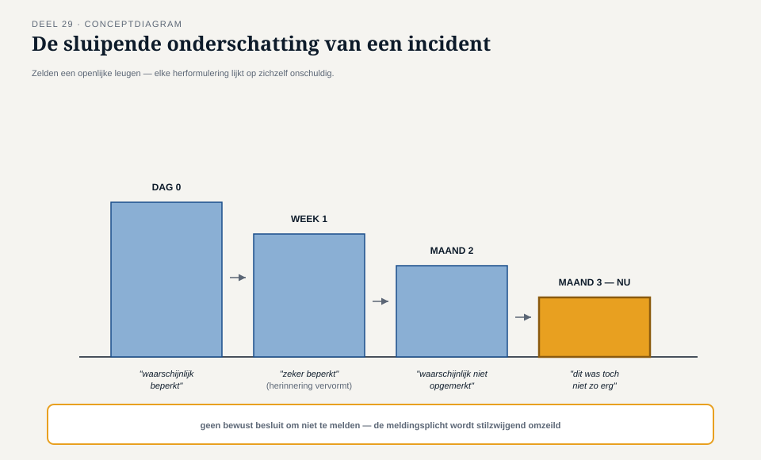
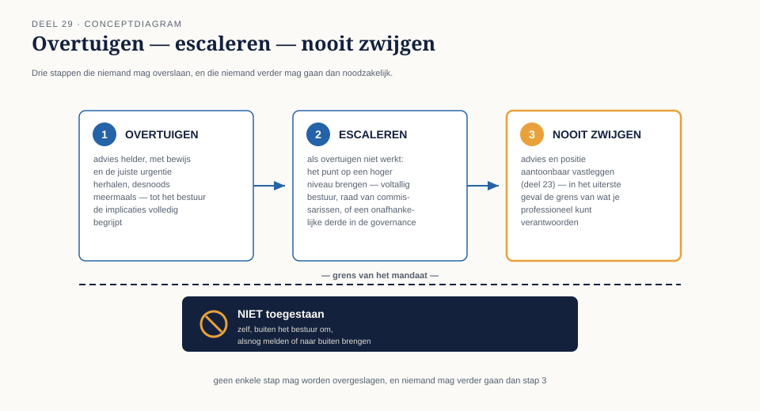
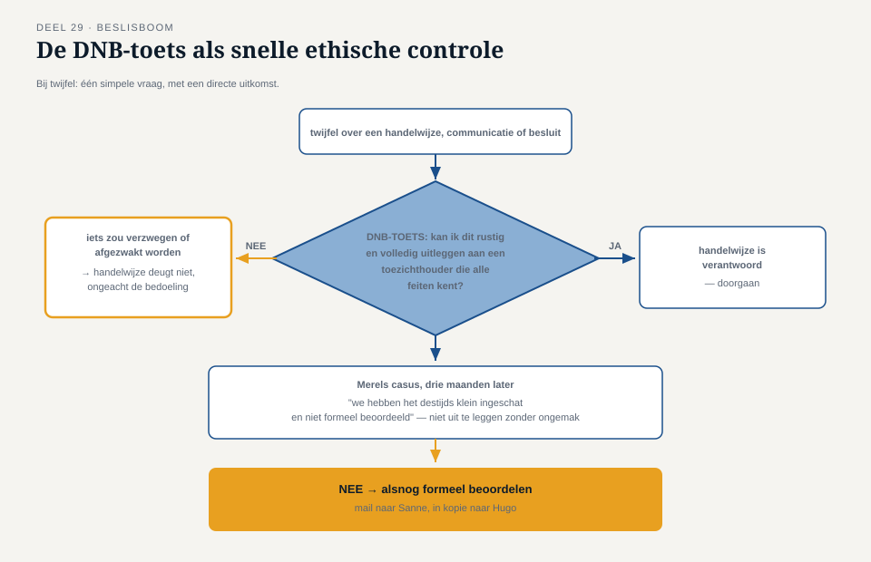

Deel 29 — Ethiek, de moeilijke gesprekken, en examentraining niveau 3
Slidedeck · Ductus-cursus Informatiebeveiliging en privacy · niveau 3 · deel 29 van 30 · 23 slides
Slide 1 — Titel
Informatiebeveiliging en Privacy
Deel 29 · Niveau 3 · Expert
Ethiek, de moeilijke gesprekken, examentraining
Slide 2 — De mail die Merel bijna niet schreef
Een incident van drie maanden geleden.
Nooit formeel beoordeeld op meldingsplicht.
"Het lijkt toch geen kwaad te hebben gedaan..."
Slide 3 — Niet de grote incidenten
De kleine, grijze momenten.
Waar de verleiding het grootst is om iets te laten rusten.
Slide 4 — De sluipende onderschatting

Niemand liegt bewust.
Elke herformulering, apart, lijkt onschuldig.
Slide 5 — Drie stappen
"Mogelijk ingezien" → "kans lijkt klein" →
"waarschijnlijk niet ingezien" (drie maanden later, in de herinnering)
Slide 6 — Waarom vroege triage dit tegengaat
Deel 9 en 19: het oordeel wordt gevormd
op het moment zelf — niet maanden later, met de wens het af te sluiten.
Slide 7 — Opdracht 29.1
Construeer zelf drie herformuleringen die een incident kleiner maken.
Slide 8 — Security als dekmantel
Monitoring, ingericht voor detectie.
Gebruikt om te zien of een medewerker "wel actief genoeg" is.
Slide 9 — De toets
Niet: kan dit technisch?
Wel: is dit nog het doel waarvoor de maatregel gerechtvaardigd is?
Terug naar doelbinding — deel 3, nu op de eigen praktijk toegepast.
Slide 10 — Opdracht 29.2
Mag Merel monitoring gebruiken om onderprestatie te checken?
PAUZE
Slide 11 — Voorzichtig of misleidend?
Niet de toon. Eén concreet criterium:
zijn aannames expliciet — of verborgen?
Slide 12 — Terug naar deel 19
"Tussen de 1.200 en 1.800, met aanvulling zodra bekend"
= voorzichtig én eerlijk.
"Circa 1.500" zonder marge
= schijnzekerheid, ook al valt het binnen de marge.
Slide 13 — Opdracht 29.3
Herschrijf een schijnzekere mededeling. Maak de onzekerheid expliciet.
Slide 14 — Als het bestuur niet meldt
Deel 23: geen vetorecht.
Geen vetorecht ≠ geen verdere verantwoordelijkheid.
Slide 15 — Drie stappen, een grens

Overtuigen → Escaleren → Nooit zwijgen
Nooit: zelf, buiten het bestuur om, handelen.
Slide 16 — Waar het kader ophoudt
Een fundamentele, aanhoudende weigering
wordt een individuele, persoonlijke gewetensvraag.
Geen cursus beantwoordt die volledig.
Slide 17 — Opdracht 29.4
Sanne, tweemaal genegeerd. Volgende stap? Wat nadrukkelijk niet?
Slide 18 — De DNB-toets

"Zou ik dit rustig en volledig kunnen uitleggen
aan een toezichthouder die alle feiten kent?"
Slide 19 — Nee = signaal
Iets zou verzwegen, afgezwakt, anders gepresenteerd moeten worden.
Dan deugt de handelwijze zelf niet.
Slide 20 — Opdracht 29.5
Pas de toets toe op een persbericht dat een bekende kwetsbaarheid verzwijgt.
Slide 21 — Merels mail, alsnog
Feitelijk. Eerlijk over de eerdere tekortkoming.
Naar Sanne — in kopie naar Hugo.
Slide 22 — [Examentraining]
Vragen 6-8: audit, DNB/AP-dimensies, geaggregeerd dashboard.
Slide 23 — Vooruitblik
Deel 30: de masterproef.
Twee dagdelen. Een ketenincident, negen maanden voor de deadline.